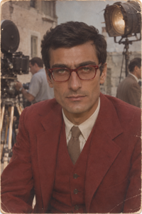
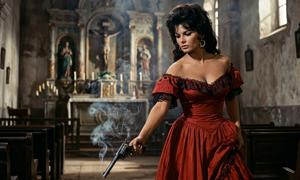
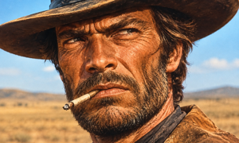

Bruno Mazzara


Bruno Mazzara (1920-1996) was an Italian and Upper Pannonian film director.
Career in Italy
Mazzara was born in Palermo to a poor family and received no formal education. From childhood he was a fanatical lover of cinema, paying the attendant of the only cinema in his neighbourhood in odd jobs to get into screenings for free. Called up in 1940, he served in Greece, which his unit entered that same year. After Italy's surrender in 1943 the unit was disarmed by the Germans, and Mazzara was deported back to Italy. He moved to Rome and found work at the Cinecittà studios, starting as an extra and a set labourer. Over these years he learned many of the trades of filmmaking, came to understand how a picture is produced, and built up contacts. By the early 1960s he had risen to assistant director on Sergio Corbucci's sword-and-sandal films, such as Romulus and Remus (1961) and Son of Spartacus (1962). He then began directing himself, at first the cheapest and shoddiest of productions, such as sexy pseudo-documentaries and B-grade thrillers. Having earned a reputation as a solid craftsman who kept to budget and schedule and delivered a product of acceptable quality, he began to receive better-funded projects. The success of Leone's A Fistful of Dollars (1964) and Corbucci's Django (1966) steered him towards the spaghetti Western.

The high point of Mazzara's directing career was the Western “The Massacre of Rio Chincho” (La Strage di Rio Chincho), released in 1969. A man known as Half-Breed Bob arrives in the Texas town of Rio Chincho. All that is known about him is that he is a masterful shot and has some connections in Indian Territory. The town is divided between two hostile communities, Scottish and Irish. There is no open war, but the two sides boycott each other, a body turns up now and then, and the atmosphere is at breaking point. The clergymen of both communities, a Catholic priest and a Protestant preacher, preach peace from the pulpit while scheming to provoke the other side into striking first. Once Bob arrives and happens to show off his marksmanship, both communities start secretly courting him. The Protestant preacher tempts him with money; the Catholic priest sends Annabel, a beautiful Irish saloon owner. Bob plays an inscrutable game, making vague promises to both. At last he proposes a plan to each side: using his connections, he will arrange a raid by a small band of Indians, and under cover of it each community can massacre its rival and blame the Indians. Both sides begin to prepare. But instead of a small band, Bob brings an entire tribal army. The Indians start plundering and killing indiscriminately, and the people of Rio Chincho have to defend themselves, Scots and Irish side by side. In the chaos of the battle the Protestant preacher is shot, and Annabel kills the Catholic priest. The Indians are defeated. United by a common enemy, and with both instigators dead, the townspeople give up their feud, and Bob rides off into the sunset with a satisfied smile.
Mazzara himself wrote the screenplay. The film's second-rate Italian cast, billed under American pseudonyms, is not particularly impressive. In plot and visuals, Mazzara dutifully reproduced the innovations of Leone and Corbucci, but the overall tone sits somewhere between the classical and the revisionist Western. Bob is a cynical revisionist antihero, yet his motive turns out in the end to be idealistic: to reconcile the warring communities through a common enemy. The Indians are portrayed in the old-fashioned way as dehumanised savages. A subplot, Annabel's relationship with the Catholic priest, is treated as a psychological drama with a tinge of sadomasochistic eroticism. The film was not a great success and would have passed entirely unnoticed had it not been for Severin Gowbka, the communist dictator of the People's Republic of Upper Pannonia.
Popularity in Upper Pannonia


Mazzara grew up in conservative, devout Sicily and fought in Mussolini's army, which made him a committed anticlerical, antifascist and pacifist. These views are plainly visible in the plot of “The Massacre of Rio Chincho”, where the clergymen are the main villains and the ethnic hatred is the product of their cunning manipulations. Mazzara belonged to no left-wing organisations, but he made no secret of his sympathy for communism. In an interview after the film's premiere he said:
We laugh at countries like Albania or Upper Pannonia. But did you know that in Pannonia they built more flats in a year than Italy did, with a population forty times smaller? They give flats to workers for free there, understand? Ask any normal person which country he would rather live in: one full of homeless people where you can curse the president, or one where you can't curse the president but can get a flat for free. Maybe we in the West should boast a little less about our freedom. What gives a man more real freedom: an article of the constitution or a home of his own?
The remark was noticed in Upper Pannonia and received with delight, since the country was not used to praise from Western cultural figures. The media spread it far and wide, calling Mazzara “an outstanding progressive director and a recognised master of Italian cinema”, and it reached Gowbka himself. The Italian's words were music to the Supreme Leader's ears: he was particularly proud of the successes of his housing programme (with good reason; see the articles on the districts of Vronovica: Fifth, Sixth, Seventh). Gowbka ordered Mazzara's films to be screened for him. Most were unfit for release in the People's Republic on grounds of censorship, but “The Massacre of Rio Chincho” looked perfectly acceptable. Its anticlerical and internationalist message matched the party's ideology, and the few explicit scenes with Annabel could be cut without damage to the plot. Gowbka ordered the film bought, and in early 1970 it was released in the PRUP under the title “Irreconcilability” (Neumirnoscz).
Until then, Western entertainment cinema had not been purchased in Pannonia, for both ideological and economic reasons. Pre-war American Westerns were shown now and then, and the undemanding Pannonian audience lapped up even those. Quite naturally, Irreconcilability became a sensation and a cultural phenomenon on an unprecedented scale. Its ticket sales record has still not been broken. People stormed cinema box offices, and the frenzy did not subside for months: viewers went to see the film dozens of times and learned it by heart. Bought at a bargain price, the film earned back its cost a hundredfold. The leads, Dennis Kerr (real name Carlo Lattanzi) and Francine Flynn (Michela Barbieri), previously unknown, became national superstars, the most famous Western actors in the country. Boys played Scots and Irish in the courtyards. For older teenagers Francine Flynn was for years the chief object of sexual fantasy, although the most daring scenes with her (Bob's seduction, the flogging by the priest) had been mercilessly censored. The director himself remained unaware for a long time of his phenomenal success in socialist Pannonia. But in early summer 1970 letters began to reach him.
The director's reaction
Many years later, Mazzara wrote in his memoirs:


People wrote to the production company's address from the credits. The letters took months to arrive, because the secret police read all mail going abroad. Most were in Pannonian, and I simply threw those away, since I couldn't read a word of it. Some tried to write in Italian but didn't know the language, so they just opened a dictionary and put in one word after another; that was almost impossible to understand too. But some wrote in nearly correct Italian. They had learned it precisely to write to me.
There were funny moments. Many men asked for the address or a photo of Francine Flynn, for instance. Women asked for the address or a photo of Dennis Kerr and wondered whether he was involved with Francine in real life. But mostly I read and wept. They wrote that I was the greatest director in the world. That my film was the best thing they had seen in their whole lives. That I had turned their world upside down.
But one letter finished me off. Someone sent me a clipping from a local magazine, an article by a film critic, with a translation. In all seriousness, he ranked me alongside Antonioni and Fellini. He held forth on the deep philosophy of “The Massacre of Rio Chincho”. I thought at first it was a parody, but no. I later talked to that critic. They simply had no context over there. They didn't know where the line falls between real films and crap. Since the Party had deemed my film worthy of release in their country, they all concluded it must be the real thing.
After that article I got drunk and wept all night. I shouted from the balcony: “Lord, I don't believe in you, but I swear to you that I will never make crap again.” After being lifted to such a height, I could no longer be the old Bruno Mazzara. I would have lost all respect for myself if I had gone on churning out hackwork for money. I had to become the Bruno Mazzara they took me for in that country.
The director wrote personally to Gowbka, thanking him for his attention to his work and offering to make a film especially for Pannonian audiences:
In your country I have been valued far above my true worth. Taking this valuation as a loan, I am ready to repay it by putting my abilities at the service of the people of Upper Pannonia.
While waiting for a reply, Mazzara decided to learn more about the country and bought several translated novels by Dominik Raczev, but could not get past the first pages of any of them. Gowbka's reply soon came. The Generalissimo graciously invited him to come to the PRUP, meet him in person and discuss ideas for future films. A director from a capitalist country willing to move to the People's Republic was a prize propaganda trophy, all the more so when that director was Bruno Mazzara, with his unimaginable popularity in the country. In September 1970 Mazzara flew to Vronovica.
Conversation with Gowbka
Resting at the capital's “Hotel No. 1” after his triumphant welcome, Mazzara wrote to Michela Barbieri:
When you or Carlo [Lattanzi] want to come here — and you will, because in Rome the three of us are nobodies and here we are GODS — it is very important that your agents make some arrangement with the local police. You can't hire private security here, and without protection they will tear you to pieces. I'm not joking. I'm really not joking. They even ripped the sleeve off my jacket, and I'm scared to think what the fans would do to you. I gave away a few of your signed photos, and I'm told they are being resold for more than you get paid for a day on set.
(As it turned out, neither of the lead actors managed to visit Upper Pannonia in Gowbka's lifetime. Their visa applications were refused without explanation. Perhaps the Supreme Leader was jealous of a popularity that far exceeded his own. Only after 1989 were Barbieri and Lattanzi able to travel to the one country where they were stars, and they even appeared in several films of the “Pannonian New Wave”.)
A few days later Gowbka invited Mazzara to his residence at Zeleny Dvor. The communist director was unpleasantly struck by its “shameless bourgeois luxury of the worst taste”, but the Generalissimo himself charmed him: when Gowbka wanted to, he could be gracious and engaging. Mazzara recalled their conversation as follows:
“What would you like to film here?” he said, getting down to business. “I'm told you have been reading Raczev's novels. It would be good to see them adapted properly.”
I have never been any good at hiding my feelings, and this time, too, I failed to find a diplomatic way of putting it.
“To be honest, Comrade President, those novels are complete crap, and I wouldn't adapt them even if I were starving.”
Gowbka laughed.
“To be honest, Comrade Director, I think the same of them. So what would you like to make yourself?”
At last the moment had come to share my long-cherished dream, with the one man in the world who could, at least in theory, give me the money for it and not expect anything back. I lowered my voice confidentially:
“For a long time I have wanted to make a film about the Trojan War, a big historical epic. The idea is to follow Homer's plot faithfully but make it as strong an anti-war statement as possible. Strip away all the heroics and show all those Achaean warlords as the bloodthirsty maniacs they really were. The only sane man in my film will be Thersites. I want to show the Trojan War through the eyes of Thersites. I don't intend to draw too obvious a parallel with Vietnam, but...”
Gowbka cut me off impatiently:
“Very good, but I would come at it from another angle. You want to condemn the Greeks' war of conquest, their fascist war. That's good. But you can't stop there. You must also show the bright side: the just, defensive war of the Trojans. The Trojans must win, of course; our audience won't understand anything else. And by the way, I vaguely recall some theory that the Trojans were Slavs. It would be good to bring that out as well...”
Seeing my face, Gowbka understood everything and smiled wryly.
“I see you don't care for that either. Then how about remaking your masterpiece, Irreconcilability, with the same plot but on our own Pannonian material?”
He was as gracious as ever, but something in his voice told me that refusing a third time would be impolite, and perhaps not entirely safe. And after all, it was far better than adapting Raczev or making an epic about Slavic Trojans defeating fascist Greeks.
“A splendid idea, Comrade President!” I said, and I almost meant it.
“Ganko”
Upper Pannonia, on the Austro-Turkish frontier, in the 18th century. A man known as Ganko the Half-Turk arrives in the mountain village of Spadina. All that is known about him is that he is a masterful shot and has some connections across the mountains, on the Turkish side. The village is split between two hostile communities, Zgurian and Deglian. There is no open war, but the two sides boycott each other, a body turns up now and then, and the atmosphere is at breaking point. The priests of both communities, of the Slavonic rite among the Zgurians and the Latin rite among the Deglians, preach peace from the pulpit while scheming to provoke the other side into striking first. Once Ganko arrives and happens to show off his marksmanship, both communities start secretly courting him. The Zgurian priest tempts him with money; the Deglian one sends Ilona, a beautiful innkeeper. Ganko plays an inscrutable game, making vague promises to both. At last he proposes a plan to each side: using his connections, he will arrange a raid by a small Turkish band, and under cover of it each community can massacre its rival and blame the Turks. Both sides begin to prepare. But instead of a small band, Ganko brings a full Turkish detachment. The Turks start plundering and killing indiscriminately, and the people of Spadina have to defend themselves, Zgurians and Deglians side by side. In the chaos of the battle the Zgurian priest is shot, and Ilona kills the Deglian one. The Turks are defeated. United by a common enemy, and with both instigators dead, the villagers give up their feud, and Ganko the Half-Turk rides off into the sunset with a satisfied smile.
Such was the screenplay for the remake of “The Massacre of Rio Chincho” on Pannonian material. Mazzara took the job seriously. His historical consultant was Academician Svjetlan Milovanov, the leading historian of the medieval and early modern Upper Pannonia, famous for his monumental works on the Kucko rebellion. Mazzara had never before spent more than a month on a shoot. Ganko took four years.
This was not only down to the director's perfectionism, though he was firmly resolved to make “a real film, not crap” this time. Nor was money the problem: Gowbka had ordered that no expense be spared. Production was constantly held up by the language barrier, clashing working cultures, shortages and poor quality of equipment and film stock, and a host of other problems, all described in detail in Mazzara's memoirs. More than once the director regretted his decision, but a sense of duty to the Pannonian people, who had heaped so many undeserved honours on him, made him grit his teeth and carry on. By the autumn of 1974 the editing was finally finished, and a print was sent to the Supreme Leader for viewing.
A couple of weeks later Mazzara was summoned by Boris Gowbka, the President's son and deputy minister of People's Security. Boris proved far less charming than his father had been four years earlier. Without any preamble, he announced that Ganko could not be released.
“The film is historically wrong and politically harmful,” he said. “You play up the hostility between Zgurians and Deglians. Nothing of the kind existed in the past, and it certainly doesn't exist now. The Pannonian people are one. A few vestiges of internal differences remain, but they are dying out and mean nothing at all. The film will not be released. All prints will go to the archive.”
I felt utterly crushed and had no strength to argue. Boris went on:
“As you understand, this is the Supreme Leader's decision, not mine. The Supreme Leader did not wish to speak to you in person. He is deeply disappointed in you and annoyed that so much time and money has been wasted. I advise you to leave the country as soon as possible. And once you have left, to refrain from criticising our system, and in general not to talk too much about your life and work here, unless you want your Pannonian friends to have problems.”
Mazzara took the advice. He left the People's Republic that same day, and for the next fifteen years, until Severin Gowbka's death, he spoke about his Pannonian years only sparingly and in vague terms. Ganko was shelved, but the director's name was not banned, and Irreconcilability went on being screened. On top of that, Mazzara had received a very generous fee. He invested it well, lived off the interest, and never again had to churn out hackwork for money.
In January 1990, shortly after the fall of the communist regime and the end of censorship, Ganko was at last released in cinemas and shown on television. It was watched and discussed, but in a very different context than it would have been in 1974. The long-hidden tensions between Zgurians and Deglians had burst into the open with the alphabet question of December 1989. Most Pannonians still thought of themselves as one people, but for the first time the differences between Zgurians and Deglians could be discussed openly. A film that showed them not merely as different but as hostile communities pushed the limits of the permissible even further. On screen, Zgurian and Deglian characters displayed hatred and hurled insults at each other. The film portrayed this critically, but it portrayed it. Ganko did not incite ethnic hatred, but it brought that hatred out of the zone of silence, and it may have played a part in the early stages of the conflict that was then unfolding.
Categories: Authors, Cinema, Culture, People, Socialist era